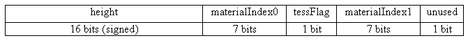
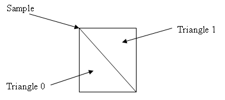

Heightfield Shape
In previous versions of the old NovodeX SDK/PhysX SDK, support for
heightfields/terrain was provided as a sub feature of general mesh
support. This led to significant memory overhead due to persistent storage of mesh vertices, indices and connectivity information.
However, the SDK now supports a specialized heightfield shape
which stores the heightfield data as elevation samples. This provides
memory savings in addition to potential performance improvements due to
better cache utilization and simpler adjacency/contact generation logic.
Heightfields are similar to meshes in that a
heightfield object contains the bulk of the data and then an
instance of that in the form of a shape. The heightfield object
is
called NxHeightField and instances are created using
NxHeightfieldShapes. NxHeightfieldShapes belongs to actors in the same
way as other shapes such as NxTriangleMeshShape,
NxSphereShape, etc.
Heightfield objects contain the following:
- Elevation samples in a grid
- The vertical extent or thickness of the heightfield
- Tessellation flags
- Material offset indices (which are added to the material indices
supplied to the shape)
Heightfield shapes contain the following:
- Vertical and horizontal scale of the heightfield instance
- Material indices
- The hole/not present material
Creation - NxHeightField
Currently, the SDK supports heightfields that use just one sample
format defining elevation, materials, etc. per sample:
- height - 16 bits, a signed 16 bit integer which specifies the
elevation at the sample
- materialIndex0 - 7 bits, material index
- tessFlag - 1 bit, tessellation flag
- materialIndex1 - 7 bits, material index
- unused/reserved - 1 bit

Heightfield samples are laid out in a row major format, with a stride
specifying the number of bytes from the start of one sample to the
next. The stride allows the user to interleave their own data with the
heightfield data. The descriptor and
heightfield data provided to the SDK can be deleted after the call to
createHeightfield() as the SDK makes an internal copy of this information.
When defining the heightfield, the user must provide either a vertical extent or
a thickness for the heightfield. Using a vertical extent is similar to modelling
the heightfield in a box of sand, each sample will extend down to a certain depth.
If you are using a thickness, then each sample has that thickness, which could
be visualized as two copies of the heightfield surface, where one is vertically
offset with the thickness. Please note that the thickness is per sample, not per
face, thus on steep slopes the actual thickness is lower.
Vertical extent
When using a vertical extent, objects are considered colliding with the
heightfield up until the vertical extent. The vertical extent is not assumed to be
infinite because the user may wish to place objects on the other side
of the heightfield (e.g., caves). The vertical extent must
encompass the heightfield data, otherwise collision detection with the
heightfield may behave in an unpredictable way. The vertical extent is
specified with respect to the scaled heightfield values for each instance so it must encompass the
largest scale.
Thickness
If you want to model caves or have other areas under the heightfield, it might
be better to specify that the heightfield should use a thickness instead of the vertical
extent. Objects are considered colliding with the heightfield from the samples
and to a depth equal to the thickness from each individual sample. As with the
vertical extent, the thickness is not scaled.
The additional information in a heightfield sample defines the
properties for the two triangles below and to the right of the sample
point (in the sample array).
The tessellation flag defines which way the quad, formed by the four sample
points to the right and bottom of the sample point, will be split. If
the tessellation flag is set, then it will be split with an edge
starting at the tessellation point and ending at the diagonally
opposite
vertex as shown in the following diagram:

However, if the flag is not set, then the quad will be split along the
other diagonal as shown below:

In addition to specifying the tessellation flag, the sample also
defines
the materials for each triangle in the quad. The triangles in the quad
are numbered so that triangle 0 is always the triangle which shares an
edge with the triangle to the right of the quad (see the diagram
above). In this way, triangle numbering is independent of the
tessellation flag.
Once you have created the heightfield shape, you are free to delete the buffers used
for initialization. They are copied by the SDK.
Example
NxHeightFieldDesc heightFieldDesc;
heightFieldDesc.nbColumns = nbColumns;
heightFieldDesc.nbRows = nbRows;
heightFieldDesc.verticalExtent = -1000;
heightFieldDesc.convexEdgeThreshold = 0;
//Allocate storage for samples.
heightFieldDesc.samples = new NxU32[nbColumns*nbRows];
heightFieldDesc.sampleStride = sizeof(NxU32);
NxU8* currentByte = (NxU8*)heightFieldDesc.samples;
for (NxU32 row = 0; row < nbRows; row++)
{
for (NxU32 column = 0; column < nbColumns; column++)
{
NxHeightFieldSample* currentSample = (NxHeightFieldSample*)currentByte;
currentSample->height = computeHeight(row,column); //Desired height value. Signed 16 bit integer.
currentSample->materialIndex0 = gMaterial0;
currentSample->materialIndex1 = gMaterial1;
currentSample->tessFlag = 0;
currentByte += heightFieldDesc.sampleStride;
}
}
NxHeightField* heightField = gScene->getPhysicsSDK().createHeightField(heightFieldDesc);
//Data has been copied therefore free the buffer.
delete[] heightFieldDesc.samples;
Creation - NxHeightFieldShape
When creating a heightfield shape, specify
horizontal and vertical scale, material mapping, a
hole material, etc.
- heightField - The heightfield object that will be used by the
shape.
- heightScale - A scale value applied to the elevation values of
the
heightfield.
- rowScale - A scale value applied to the heightfield rows.
- columnScale - A scale applied to the heightfiel columns.
- materialIndexHighBits - Specifies the material for a
heightfield triangle along with the low order bits of the material
index stored in each heightfield sample.
The heightfield is mapped to shape space with the vertical/elevation mapped to the y axis. The rows of the heightfield grid are mapped
to the x axis and the columns to the z axis. Rows and columns increase
from the origin in the positive direction.
In other words, the scale factors are applied to the heightfield as if the sample
points were mapped into the cube (0,0,0)=>(1,1,1). The scale factors
must be non-zero, although negative scale factors are allowed. Negative
scale factors mirror the heightfield across the appropriate axis, but do not change the direction of the normals (so the
heightfield will still face upwards when it is mirrored across an
axis).
Example - Creating the Heightfield Shape
NxHeightFieldShapeDesc heightFieldShapeDesc;
heightFieldShapeDesc.heightField = heightField;
heightFieldShapeDesc.heightScale = gVerticalScale;
heightFieldShapeDesc.rowScale = gHorizontalScale;
heightFieldShapeDesc.columnScale = gHorizontalScale;
heightFieldShapeDesc.materialIndexHighBits = 0;
heightFieldShapeDesc.holeMaterial = 2;
NxActorDesc actorDesc;
actorDesc.shapes.pushBack(&heightFieldShapeDesc);
actorDesc.globalPose.t = pos;
NxActor* newActor = gScene->createActor(actorDesc);
Tessellation Flags
As discussed above, the tesselation flags allow the user to change the
way cells in the heightfield are divided into triangles. This allows
the user to choose a tessellation which most accurately represents
their
terrain/renderable data. Some examples are given below:
| Tessellation
flags |
Result |
0,0,0,
0,0,0,
0,0,0,
|
|
1,1,1,
1,1,1,
1,1,1,
|
 |
0,1,0,
1,0,1,
0,1,0,
|
|
Materials and Holes
As described above, each sample specifies materials for a triangle. A
full material index, as returned from NxMaterial::getMaterialIndex(), is not fully stored in a sample (due to size restrictions). Instead,
the
material index for each heightfield sample, 7 bits, is combined
with the materialIndexHighBits member of NxHeightFieldShapeDesc to form
the full 16 bit index.
The SDK allows the user to specify a hole material when creating a
heightfield shape. This material is treated in a special way; it
effectively instructs the SDK to ignore certain triangles in the grid,
creating holes in the terrain. A mesh or another heightfield could
join with these holes to form caves and more complicated geometry.
Contact Generation
Heightfield shapes support collision detection and triggers with the
following shapes:
The heightfield shape generates contacts when the appropriate shape is
within its vertical extent. Contact normals are
generated only with respect to the surfaces of the heightfield. For
example, if an object intersects the side of the heightfield but not the
surface, then only a contact pointing towards the surface will be
generated. Consider this example of a simple heightfield with a hole (the white area):
NOTE: An optimization in the sphere and capsule contact generation causes the heightfield not to generate contacts
until the center of the sphere/capsule is in contact with the vertical extent of the heightfield.
The same optimization also leads to spheres and capsules only generating contact points against
edges if their centers are above the heightfield surface (see the examples above).
Contact generation with triangle edges at the terrain's borders can be disabled using the NX_HF_NO_BOUNDARY_EDGES
flag, allowing more efficient contact generation when there are
multiple heightfield shapes arranged so that their edges touch.
When the NX_MESH_SMOOTH_SPHERE_COLLISIONS
mesh flag is raised, the contact is the smooth
heightfield normal. NOTE: The SDK modifies the position
of the contacts for spheres when the NX_MESH_SMOOTH_SPHERE_COLLISIONS
flag is specified. This is necessary because keeping the exact position
may induce an unrealistic torque on the sphere.
Raycasting and Overlap Testing
The heightfield shape supports the following overlap/raycasting
functions (see Overlap Testing for more information):
- NxShape::raycast()
- NxShape::checkOverlapSphere()
- NxShape::checkOverlapAABB()
- NxShape::getTriangle()
The character controller is supported for
heightfields, since it relies on the following:
- NxShape::overlapAABBTriangles()
- NxShape::getTriangle()
API Reference
Copyright © 2008 NVIDIA Corporation, 2701 San Tomas Expressway, Santa Clara, CA 95050 U.S.A. All rights reserved. www.nvidia.com